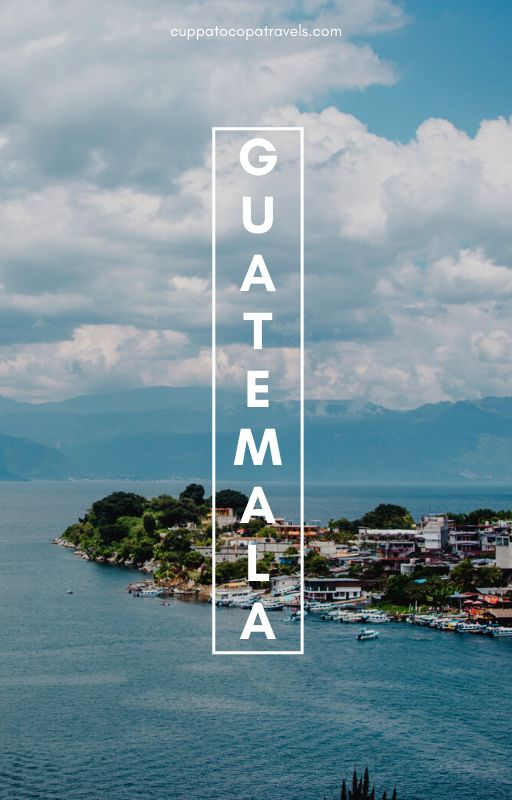

Explora Guatemala con confianza
Información clara de destinos y una selección de hoteles para tu próxima aventura.

Guatemala, Tierra de Eterna Primavera
Un país de una riqueza cultural y natural inigualable, cuyo nombre significa "lugar de muchos árboles". Su historia es un fascinante tejido entre la grandeza de la civilización Maya y la herencia del período colonial español.
Independencia y Legado
Guatemala proclamó su independencia de España el **15 de septiembre de 1821**. Este evento marcó el nacimiento de una nación soberana, forjando una identidad propia que hoy se refleja en su gente, sus colores y sus tradiciones.
Datos Curiosos
- Cuna del Chocolate: La civilización Maya fue la primera en cultivar el cacao y crear una bebida a base de él, el "xocoatl", precursor del chocolate.
- El Ave Nacional: El Quetzal, un ave de espectacular belleza, no solo es el símbolo nacional, sino que también da nombre a la moneda del país.
- Tierra de Volcanes: Guatemala alberga 37 volcanes, incluyendo el Pacaya y el Fuego, que se mantienen activos ofreciendo un espectáculo natural impresionante.